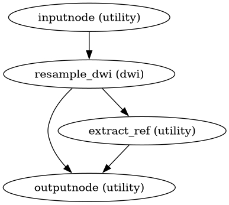

dmriprep.workflows.dwi.resampling module
DWI resampling workflows (transform stage).
These workflows compose all estimated transforms and apply them in a single interpolation step, minimizing blurring and preserving signal quality.
- class dmriprep.workflows.dwi.resampling.ResampleDWISeries(from_file=None, resource_monitor=None, **inputs)View on GitHub
Bases:
SimpleInterfaceResample a 4D DWI series with composed transforms.
This interface composes all provided transforms (motion, coregistration, SDC) and applies them in a single interpolation step to each volume of the DWI series. This minimizes blurring compared to sequential resampling operations.
- Mandatory Inputs:
dwi_file (a pathlike object or string representing an existing file) – DWI NIfTI file.
reference (a pathlike object or string representing an existing file) – Reference image defining output space.
- Optional Inputs:
apply_sdc (a boolean) – Apply SDC. (Nipype default value:
False)coreg_xfm (a pathlike object or string representing an existing file) – Coregistration transform.
fmap_coeff (a pathlike object or string representing an existing file) – Fieldmap B-spline coefficients.
jacobian (a boolean) – Apply Jacobian modulation. (Nipype default value:
False)metadata (a dictionary with keys which are any value and with values which are any value) – DWI metadata.
motion_xfm (a list of items which are a pathlike object or string representing an existing file) – Per-volume motion transforms.
n_procs (an integer) – Number of parallel processes. (Nipype default value:
1)order (an integer) – Interpolation order. (Nipype default value:
3)
- Outputs:
out_file (a pathlike object or string representing an existing file) – Resampled DWI file.
- dmriprep.workflows.dwi.resampling.init_dwi_native_wf(*, fieldmap_id=None, jacobian=False, omp_nthreads=1, name='dwi_native_wf')View on GitHub
Build a workflow to resample DWI to native (corrected) space.
This workflow composes all transforms (HMC + eddy + SDC) and applies them in a single interpolation step to the DWI data. The output remains in DWI native space but is corrected for all distortions.
- Workflow Graph

(Source code, png, svg, pdf)
- Parameters:
fieldmap_id – ID of the fieldmap used for SDC, if any.
jacobian – Whether to apply Jacobian modulation for SDC.
omp_nthreads – Number of threads for parallel processing.
name – Workflow name.
- Inputs:
dwi_file – Original DWI NIfTI file.
dwi_mask – Brain mask in DWI space.
hmc_dwiref – HMC reference image.
motion_xfm – Per-volume motion transforms.
fmap_coeff – Fieldmap B-spline coefficients (if SDC).
metadata – DWI metadata dictionary.
- Outputs:
dwi_preproc – Preprocessed DWI in native space.
dwi_ref – Reference image (first b=0 after correction).
{kind=link}
{kind=link}
- dmriprep.workflows.dwi.resampling.init_dwi_std_wf(*, fieldmap_id=None, jacobian=False, omp_nthreads=1, name='dwi_std_wf')View on GitHub
Build a workflow to resample DWI to standard (anatomical) space.
This workflow composes all transforms (HMC + eddy + SDC + coregistration) and applies them in a single interpolation step. The output is in the anatomical (T1w) space.
- Parameters:
fieldmap_id – ID of the fieldmap used for SDC, if any.
jacobian – Whether to apply Jacobian modulation for SDC.
omp_nthreads – Number of threads for parallel processing.
name – Workflow name.
- Inputs:
dwi_file – Original DWI NIfTI file.
t1w_preproc – Preprocessed T1w image (defines output space).
t1w_mask – Brain mask in T1w space.
hmc_dwiref – HMC reference image.
motion_xfm – Per-volume motion transforms.
dwiref2anat_xfm – Transform from DWI reference to anatomical space.
fmap_coeff – Fieldmap B-spline coefficients (if SDC).
metadata – DWI metadata dictionary.
- Outputs:
dwi_preproc – Preprocessed DWI in T1w space.
dwi_ref – Reference image in T1w space.
dwi_mask – Brain mask in T1w space.